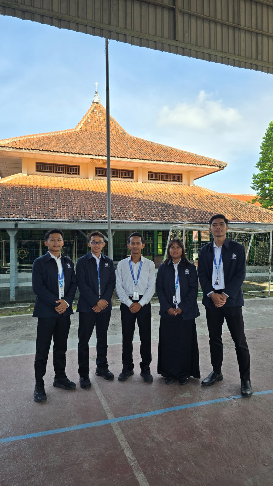
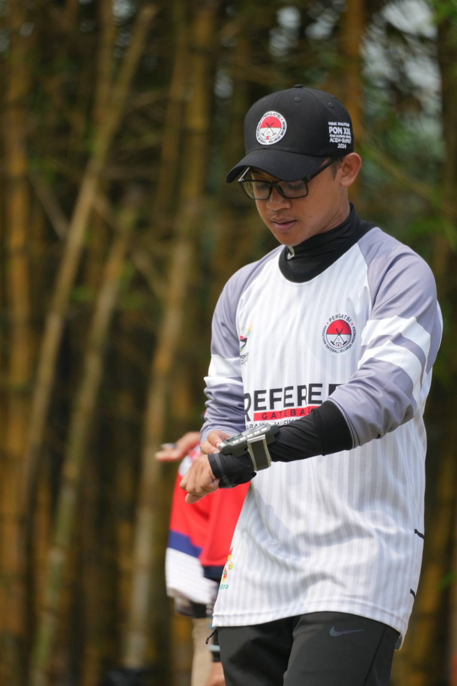

DOKUMENTASI KEGIATAN
Visualisasi aksi nyata, inovasi pedagogi, kolaborasi guru pamong, dan momentum kepanitiaan selama pelaksanaan Praktik Pengalaman Lapangan (PPL) PPG Prajabatan PJOK.
PRAKTIK PENGALAMAN LAPANGAN 1 (TERBIMBING)
Fokus pada observasi lingkungan sekolah, pendampingan intensif bersama Guru Pamong & DPL, serta asistensi mengajar.
 KOLABORASI
KOLABORASI
Foto Bersama DPL dan GP
Momen foto bersama Dosen Pembimbing Lapang dan Guru Pamong sebelum penutupan kegiatan PPL Terbimbing.
 EVALUASI
EVALUASI
Kunjungan Monev Dosen
Kunjungan Monev dilakukan untuk mengevaluasi pelaksanaan kegiatan mengajar dan memberikan umpan balik konstruktif.
 PEMBELAJARAN
PEMBELAJARAN
Praktik Mengajar Teori
Momen praktik pembelajaran di kelas terkait penguatan literasi konsep olahraga dan diskusi kelompok.
 OUTING CLASS
OUTING CLASS
Kunjungan Museum & Budaya
Melakukan pendampingan murid SMKN 3 Yogyakarta dalam kunjungan ke Museum Vredeburg dan Gedung Agung.

SOLIDARITASRekan Sejawat PPL 1
Foto bersama rekan-rekan mahasiswa PPL yang sedang menjalani masa praktik terbimbing di SMKN 3 Yogyakarta.
 REFLEKSI
REFLEKSI
Refleksi Akhir PPL 1
Momen refleksi akhir setelah kegiatan PPL 1 selesai, di mana mahasiswa berbagi pengalaman pedagogi yang diperoleh.
PRAKTIK PENGALAMAN LAPANGAN 2 (MANDIRI)
Pengambilan peran penuh sebagai guru mandiri di lapangan, mencakup rancangan 4 siklus ajar, kepanitiaan sekolah, dan layanan MBG.
 NON-MENGAJAR
NON-MENGAJAR
Pendampingan SBO (Sains, Budaya & Olahraga)
Memandu jalannya turnamen olahraga antarkelas, supervisi pencegahan cedera, dan pembinaan karakter sportivitas peserta didik.
 KEPANITIAAN
KEPANITIAAN
Panitia Peringatan Hari Kemerdekaan RI
Mengelola teknis perlombaan kebugaran jasmani, keamanan arena lapangan, dan penilaian lomba hari kemerdekaan di sekolah.
 LAYANAN GIZI
LAYANAN GIZI
Piket Layanan Program MBG
Mengawal keteraturan distribusi gizi siswa, memastikan standar sanitasi hidangan, dan mendampingi pembudayaan hidup sehat.
 SIKLUS 1 (UTS)
SIKLUS 1 (UTS)
Instruksi Pembelajaran Siklus 1: Renang
Penguasaan teknik renang gaya bebas dengan diferensiasi lintasan dan protokol keselamatan ketat (*zero accident*).
 SIKLUS 2 (UAS)
SIKLUS 2 (UAS)
Instruksi Pembelajaran Siklus 2: Bola Basket
Pelaksanaan latihan berstasiun (*station circuit*) dan pemahaman taktis lay-up shoot pada siswa Fase F SMA N 1 Seyegan.

SIKLUS 3 & 4Pembinaan Olahraga Presisi & Bulutangkis
Menumbuhkan nilai kesetaraan peran gender, regulasi diri, dan kalkulasi sudut taktis dalam cabang gateball dan net sport.